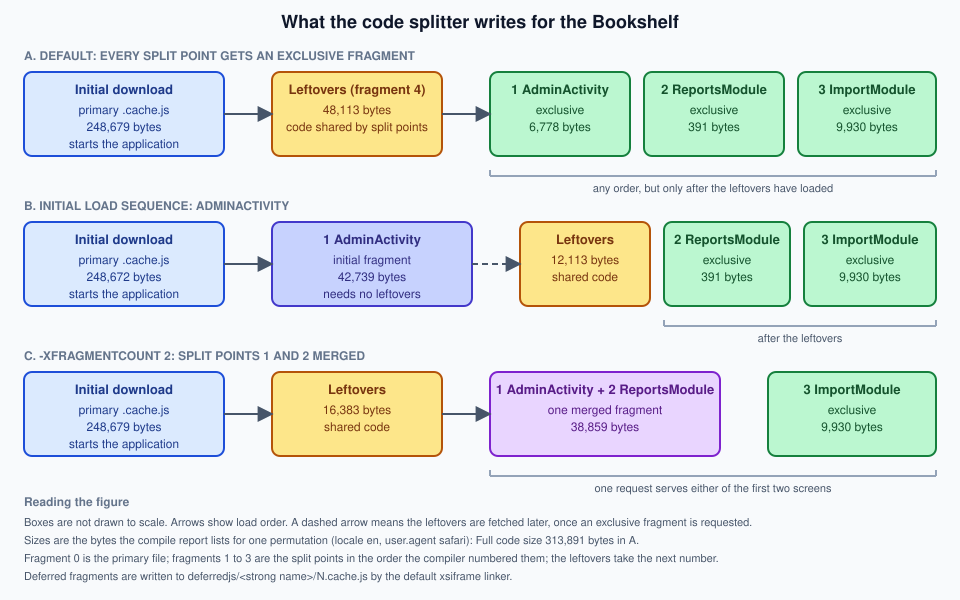

Code Splitting
|
This content was generated with the assistance of AI and should be verified against the official documentation before being relied on in production. |
This page is written against GWT 2.13.1 (released 2026-06-19), gwt-maven-plugin 1.3.0 (net.ltgt.gwt.maven), JDK 21 running the compiler with -sourceLevel 17, the Jakarta Servlet 6 server of the Bookshelf scenario and the gwt-user/gwt-dev 2.13.1 sources, checked on 2026-10-09.
Code splitting is a client feature that the compiler implements, so the page mixes client code (the calls to GWT.runAsync, the Async Provider classes, the lazy activity) with build knowledge (compiler flags, module configuration properties, the compile report and the files the linker writes).
Nothing runs on the server except the static files it serves.
Every number and every output block below was produced by compiling and running a private copy of the Bookshelf scenario: the 2.13.1 Compiler with -compileReport for the sizes, the same flags through mvn package and gwt-maven-plugin for the build, a JUnit run for the lazy activity, a probe module per error message, and the production output served statically on port 8951 and driven in the embedded Chrome pane, with the server log as the record of which fragment was requested when.
Where a statement comes only from the Developer Guide or from the 2.13.1 source, the text says so.
Every browser must download and parse the whole JavaScript of an application before the first screen appears, and that code grows with every screen. Code splitting is GWT’s answer: the developer marks the places where the program may pause for more code (a split point), and the compiler cuts the program into several JavaScript files (fragments), so that the first download holds only what the first screen can reach. The Developer Guide calls the technique "Dead-for-now" (DFN) splitting: the code behind a split point is dead until the split point is reached. It is a compile-time analysis, not a runtime module loader, and that single fact explains most of the pitfalls later on this page.
How code splitting works
A split point is a call to GWT.runAsync.
The call looks like registering an event handler, except that the event is "the code you need has arrived":
GWT.runAsync(new RunAsyncCallback() {
@Override
public void onFailure(Throwable reason) {
// the download failed (network down, fragment missing, server error)
}
@Override
public void onSuccess() {
// everything reachable from here has been downloaded and installed
}
});RunAsyncCallback declares exactly two methods, onFailure(Throwable) and onSuccess(), so it is not a functional interface: a lambda does not compile, and an anonymous class (or a small named class) is the form to use.
GWT.runAsync has two overloads (both in com.google.gwt.core.client.GWT):
| Signature | Meaning |
|---|---|
|
An anonymous split point. The compiler names it after the enclosing method (a JSNI-style signature such as |
|
A named split point. The first argument must be a class literal; it is used only as a name. The Javadoc states that two calls with the same class literal put their code in the same fragment. |
What the compiler does with the call
The compiler pass ReplaceRunAsyncs (in com.google.gwt.dev.jjs.impl.codesplitter) rewrites every GWT.runAsync call into a call to AsyncFragmentLoader.runAsync(int, RunAsyncCallback), where the integer is the number of the split point (1, 2, 3 … in the order the compiler meets them).
It also checks the arguments, which is where the compile errors in the pitfalls table come from.
The code splitter then decides, for every method, field and class that survives dead-code elimination, in which fragment it belongs.
The fragments are numbered like this (this is the Javadoc of AsyncFragmentLoader):
-
fragment 0 is the base (initial) fragment, which is the primary
.cache.jsfile the bootstrap script loads; -
fragments 1 to m, for m split points, are the code of each split point;
-
fragment m+1 is the leftovers fragment, the code that belongs to no single split point.
At run time AsyncFragmentLoader keeps one array of callbacks per fragment.
If the fragment is already loaded, onSuccess is scheduled with a deferred command, so it is always asynchronous, even when no download is needed (the release notes for 2.6.0 describe this change: before it, the call could run synchronously).
If it is not loaded, the loader asks a LoadingStrategy to download it, and runs the callbacks when the code has been installed.
The strategy depends on the linker: the default xsiframe linker (and direct_install) use ScriptTagLoadingStrategy, which adds a script element; the deprecated xs linker uses CrossSiteLoadingStrategy; others use XhrLoadingStrategy.
A failed download is retried automatically up to MAX_AUTO_RETRY_COUNT times (3 in the 2.13.1 source, with an autoRetry query parameter added to the URL) before onFailure is called.
The kinds of fragment
| Fragment | Contains | Loads |
|---|---|---|
Initial download (fragment 0) |
Everything the application can run up to, but not past, the first split point: the entry point, the shell, the first screen, the loader itself. |
At start-up, from the |
Exclusive fragment |
Code needed only once that one split point has been reached. |
On demand, in any order, but only after the leftovers fragment has loaded. |
Leftovers fragment |
Code reachable from more than one split point (and from no initial code), plus split points that were not given a fragment of their own. |
The first time any exclusive fragment is needed. Its size is the delay the first split point pays. |
Initial fragment |
A split point named in the initial load sequence; it also holds the shared code its own sequence needs. It does not depend on the leftovers. |
In its position in the sequence, which can be before the leftovers. |
The figure shows the same Bookshelf client in three configurations: the default, with an initial load sequence, and with fragment merging. The sizes are the ones measured further down.

For the default xsiframe linker the deferred fragments are written to deferredjs/<hash>/N.cache.js, one directory per permutation, where N is the fragment number from the list above.
The Developer Guide still says the initial fragment is a file ending in cache.html; that describes the legacy std (iframe) linker, and with the default linker of GWT 2.13.1 every file ends in cache.js.
The whole output directory is shown on Compiler & Compilation.
A first split point
The smallest useful split point moves a rarely used piece of UI out of the first download.
This is the Developer Guide’s example, kept to its shape: a button whose click handler reaches Window.alert through a split point.
public class Hello implements EntryPoint {
@Override
public void onModuleLoad() {
Button b = new Button("Click me", new ClickHandler() {
@Override
public void onClick(ClickEvent event) {
GWT.runAsync(new RunAsyncCallback() {
@Override
public void onFailure(Throwable caught) {
Window.alert("Code download failed");
}
@Override
public void onSuccess() {
Window.alert("Hello, AJAX");
}
});
}
});
RootPanel.get().add(b);
}
}The string "Hello, AJAX" and the code that Window.alert needs are now in a deferred fragment, not in the primary file.
One string is not worth a split point (the guide says so itself: the loader support can outweigh the saving), but the mechanism is the same for a whole subsystem, and the Bookshelf admin area below is one.
A split point does not create a new thread or a new page.
Between the call and onSuccess the application keeps running, so code that follows GWT.runAsync in the same method executes first, and a second click on the button before the fragment arrives queues a second callback for the same fragment, not a second download.
Naming split points and what the compiler checks
An anonymous GWT.runAsync(callback) is fine when nothing needs to refer to the split point.
Name it with a class literal (GWT.runAsync(AdminActivity.class, callback)) when you want to use it in the initial load sequence, to prefetch it, or to share a fragment between two calls.
Any class literal works as the name; the enclosing class is the usual choice.
Two named calls with the same literal go in the same fragment (a behaviour added in 2.6.0), which is a way to put two entry points of one subsystem together.
The names are checked at compile time, and a compile error is the symptom of every mistake here:
Replacing GWT.runAsync with island loader calls
[ERROR] Errors in 'com/example/bookshelf/client/probe/ProbeNonLiteral.java'
[ERROR] Line 11: Only class literals may be used to name a call to GWT.runAsync()Names are looked up in two other places, both of which are matched against the class literals, never against method names:
-
RunAsyncCode.runAsyncCode(Class), used for prefetching (below), needs exactly one split point with that name; -
the entries of
compiler.splitpoint.initial.sequence(below) need exactly one as well.
The messages for the unknown, the ambiguous and the badly spelled name are in the pitfalls table.
Source: GWT Javadoc — GWT.runAsync
What ends up in which fragment
The splitter works from reachability. Starting from the entry point it marks everything reachable without passing through a split point as initial. For each split point it then computes what that split point reaches that nothing else does (its exclusive code); code that two or more split points reach, but the initial code does not, goes to the leftovers. There is no annotation to force a class into a fragment: the only tool is to change what refers to what.
Two rules follow, and breaking them is how most splitting attempts fail.
-
A reference from initial code to anything in a fragment pulls the code into the initial download. The reference can be an instantiation, a static method call, a subclass, an interface implementation that is called through the interface, or a field of that type in an object that is created eagerly.
-
The
newof a class and its use must both be behind the split point. Moving therunAsynccall somewhere that the class is already instantiated changes nothing.
A reference in the wrong place: the Bookshelf measurement
The Bookshelf admin area is the worked example, built below.
To show the first rule, one line of the correct version was changed in a copy: the AdminActivity is created before the split point instead of inside it.
public static Activity lazy() {
final Activity admin = new AdminActivity(); // created in initial code: AdminActivity.start() is now reachable
return new LazyActivity(new LazyActivity.Provider() {
@Override
public void get(final AsyncCallback<Activity> callback) {
GWT.runAsync(AdminActivity.class, new RunAsyncCallback() {
@Override
public void onFailure(Throwable reason) {
callback.onFailure(reason);
}
@Override
public void onSuccess() {
callback.onSuccess(admin);
}
});
}
});
}The compile succeeds, the application behaves the same, and the compile report says what happened: the AdminActivity split point shrank from 6,778 to 63 bytes, and the initial download grew from 248,679 to 291,206 bytes (+42,527 bytes, +17%).
The compile report’s dependency table shows why.
The chain from the entry point to the admin panel, read from dependencies0.xml.gz (the report’s own data file) for the initial fragment:
com.example.bookshelf.client.view.AdminPanel::AdminPanel
called by com.example.bookshelf.client.activity.AdminActivity::start
called by com.google.gwt.activity.shared.ActivityManager::$tryStart
called by com.google.gwt.activity.shared.ActivityManager::onPlaceChange
called by com.example.bookshelf.client.App::$onModuleLoad
called by com.google.gwt.lang.com_00046example_00046bookshelf_00046AppSplit__EntryMethodHolder::initActivityManager calls start() on whatever activity it was given; once an AdminActivity exists in initial code, AdminActivity.start is live, and so is everything it constructs.
The fix is to break one link of the chain: create the activity inside the callback, as the correct version of the page does.
The compile report’s dependency view (Compile Reports & Optimization covers it in detail) shows the same chain as a clickable tree: browse to the item in the Initial download code subset, and follow the chain back to the entry point.
The Async Provider pattern
When a coherent part of the application (a "module" in the loose sense) should live in one exclusive fragment, the Developer Guide’s recommended shape is the Async Provider:
-
make one class stand for the module, and make every other class of the module reachable only through instance methods of it;
-
allow only one instantiation of that class, and put it inside a
GWT.runAsync; -
give callers a static
createAsync(client)method instead of a constructor.
Callers that might run before the module is loaded go through createAsync; callers that are known to run afterwards can keep the instance they were given and call it directly.
This is the Bookshelf’s loan-report module (the code compiled for this page):
public class ReportsModule {
private static ReportsModule instance;
public static void createAsync(final ModuleClient<ReportsModule> client) {
GWT.runAsync(ReportsModule.class, new RunAsyncCallback() {
@Override
public void onFailure(Throwable reason) {
client.onUnavailable(reason);
}
@Override
public void onSuccess() {
if (instance == null) {
instance = new ReportsModule();
}
client.onSuccess(instance);
}
});
}
private ReportsModule() {}
/** The loan report: a date picker for the period and a tree with the totals. */
public Widget createView() {
Tree totals = new Tree();
TreeItem loans = totals.addTextItem("Loans");
loans.addTextItem("Open");
loans.addTextItem("Overdue");
VerticalPanel panel = new VerticalPanel();
panel.add(new DatePicker());
panel.add(totals);
return panel;
}
}/** Receives a lazily loaded module, or learns that its code could not be downloaded. */
public interface ModuleClient<T> {
void onSuccess(T module);
void onUnavailable(Throwable reason);
}The constructor is private, so the only new ReportsModule() is the one behind the split point, and the createView() method (with its DatePicker and Tree) is reachable only through the instance.
A second class, ImportModule, is built the same way for the CSV-import dialog.
The AdminPanel uses both from click handlers, so each module is downloaded the first time its button is pressed:
Button reports = new Button("Reports");
reports.addClickHandler(e -> ReportsModule.createAsync(new ModuleClient<ReportsModule>() {
@Override
public void onSuccess(ReportsModule module) {
slot.clear();
slot.add(module.createView());
}
@Override
public void onUnavailable(Throwable reason) {
slot.clear();
slot.add(new Label("Reports are not available right now"));
}
}));Three details are worth copying.
onUnavailable is a real branch, not an afterthought: a laptop that goes offline between the first screen and the first click is the normal way a fragment fails to load, and the user should see a sentence, not a button that does nothing.
The instance is created once, so a second click does not rebuild the module (and does not download again).
And the shape is the Developer Guide’s: ModuleClient<T> replaces the guide’s non-generic ModuleClient, and the structure is unchanged.
The Developer Guide presents the Async Provider as one of two idioms that were still in their infancy when it was written.
AsyncProxy, a type that the 2.6.0 release notes mark as deprecated, is no longer in the 2.13.1 gwt-user source, so the hand-written provider above is the form to use.
Prefetching
The code splitter has no automatic prefetching of its own: a fragment (other than the leftovers) is downloaded when it is first requested.
The Developer Guide shows a hand-made form: call the same GWT.runAsync early, with a callback that does nothing, so that the code is in the browser cache when the real call comes.
The usual trick is to reuse a parameter that is already in scope and treat null as "just prefetch":
public void showContact(final String contactId) {
GWT.runAsync(new RunAsyncCallback() {
@Override
public void onFailure(Throwable caught) {
cb.onFailure(caught);
}
@Override
public void onSuccess() {
if (contactId == null) {
// do nothing: just a prefetch
return;
}
// Show contact contactId...
}
});
}GWT 2.13.1 also ships a small API for this in com.google.gwt.core.client.prefetch, which the Developer Guide page does not mention (it is in the Javadoc and the source):
| Class | Role |
|---|---|
|
|
|
|
The Bookshelf asks for the admin area once the first screen is up, because the administrators are known to click it:
private void prefetchAdminArea() {
Prefetcher.prefetch(RunAsyncCode.runAsyncCode(AdminActivity.class));
Prefetcher.start();
}The server log of the static server on port 8951 shows the order in which the browser asked for the files, with no click involved:
GET /bookshelf/bookshelf.nocache.js
GET /bookshelf/<hash>.cache.js the initial download (fragment 0)
GET /bookshelf/deferredjs/<hash>/4.cache.js the leftovers, fetched first
GET /bookshelf/deferredjs/<hash>/1.cache.js the AdminActivity fragmentTwo things to read from it.
The prefetch of an exclusive fragment fetches the leftovers first, because the splitter requires them to be installed before any exclusive fragment, so prefetching one fragment costs the leftovers too.
And the loader sends the prefetch queue one fragment at a time, whenever it has nothing else to download; the prefetch still competes for bandwidth with the application’s other requests, which is why the Developer Guide suggests doing it when little else is going on.
Clicking Admin afterwards made no new request: the panel was built from the code that was already there.
The same click-through then fetched 2.cache.js when Reports was pressed and 3.cache.js when Import was pressed.
Source: GWT Javadoc — Prefetcher
Source: GWT Javadoc — RunAsyncCode
The initial load sequence
By default every split point has an exclusive fragment, which keeps the order of reaching split points free.
The price is the one described above: the first split point reached waits for the leftovers, and the leftovers hold all the code shared between split points.
If one split point is practically always the first, you can promise that to the compiler with the compiler.splitpoint.initial.sequence configuration property, listing named split points in the order they will be reached:
<module rename-to="bookshelf">
<inherits name="com.example.bookshelf.AppSplit" />
<extend-configuration-property name="compiler.splitpoint.initial.sequence"
value="com.example.bookshelf.client.activity.AdminActivity" />
</module>The value is the fully qualified name of the class used as the name of exactly one GWT.runAsync call.
The source of CodeSplitters.findRunAsync also accepts a JSNI-style reference (@com.example.Foo::bar()) that names the method enclosing an anonymous split point; the comment in CompilerParameters.gwt.xml that declares the property describes that JSNI form, while the Developer Guide describes only the class-literal form, which is the one this page used and tested.
With -logLevel TRACE the compiler reports what it understood:
Looking up initial load sequence for split points
Initial load sequence of split points: 1The effect on the Bookshelf (one permutation, bytes from the compile report):
| Default | Initial sequence: AdminActivity | |
|---|---|---|
Initial download |
248,679 |
248,672 |
Fragment of |
6,778 (exclusive) |
42,739 (initial fragment) |
Leftovers |
48,113 |
12,113 |
|
391 and 9,930 |
391 and 9,930 |
The AdminActivity fragment grew by 35,961 bytes because it now carries the DatePicker and the other code shared by the first two modules, which used to be in the leftovers; the leftovers fell by 36,000 bytes; the initial download did not change.
The first visit to the admin area no longer waits for a 48,113-byte leftovers fragment, and the Reports and Import fragments still need the (smaller) leftovers.
The cost is the one the Developer Guide warns about, and it is a real one: the order is a promise. If the third entry of a sequence is reached first, its code waits for the first two fragments to be downloaded; and if a split point that is not in the sequence is reached first, the whole sequence and the leftovers must load before it. Put in the sequence only split points that are reached in that order for almost every user.
Fragment merging and -XfragmentCount
In an application with many split points, the leftovers fragment grows, because every addition of a split point increases the chance that two of them share code. That does not hurt the initial download, but it does delay the first split point reached. Fragment merging, which arrived in GWT 2.5 (the article by Alan Leung, updated June 2012), lets the compiler merge several exclusive fragments into one, pulling the code they share out of the leftovers. One request then serves any of the merged split points, and the total number of requests of a session falls, assuming that most fragments are needed in the end.
You enable it with -XfragmentCount x.
The compiler help marks the flag EXPERIMENTAL and describes it as a limit on the number of fragments for a code splitter that merges split points; the article says that x is a lower bound on the number of exclusive fragments and that the compiler may keep more if merging does not seem beneficial.
The 2.13.1 source gives the arithmetic: the number of exclusive fragments it aims for is max(0, x - (initial split points + 1) - 1) (the "+ 1" is the base fragment, the last "- 1" is the leftovers), and it merges the most similar pairs of split points until it gets there.
On the Bookshelf (three split points, one permutation, no initial sequence), the flag gave this:
| Flag | Deferred files | none, or -XfragmentCount 5 or 6 |
|---|---|---|
|
|
|
With a count of 5 or more nothing was merged, so the count is the total number of fragments you are willing to have (the base, the three exclusive ones and the leftovers is 5); with 4 or fewer the compiler merged the two split points with the most code in common.
The compile report lists the merged fragment as one row with two locations (38,859 bytes for AdminActivity and ReportsModule together), the leftovers fell from 48,113 to 16,383 bytes, and the initial download stayed at 248,679 bytes.
ReportsModule itself weighs only 391 bytes: nearly all of its code is shared with the admin panel, so it was the obvious partner.
The related flags and properties
| Option | Status in 2.13.1 |
|---|---|
|
In |
|
Gone. The 2.12.0 release notes say the deprecated flag has no effect any more and is to be removed; the 2.13.0 notes list its handler class among the removed classes. The 2.13.1 compiler answers |
|
A configuration property declared in |
|
Not in |
|
The compile report (Compile Reports & Optimization covers it) is written to the |
Source: GWT — Fragment Merging
Source: GWT — Command Line Tools
Combining with Activities
The Activities and Places framework (see MVP, Activities & Places) is a natural fit for code splitting: a place is a coarse unit of the application, an activity is its presenter, and the ActivityManager already copes with an activity that has not shown its widget yet.
The first form, which that page shows, puts the split point inside start:
public class AdminActivity extends AbstractActivity {
@Override
public void start(AcceptsOneWidget panel, EventBus eventBus) {
GWT.runAsync(new RunAsyncCallback() {
@Override
public void onSuccess() { panel.setWidget(new AdminPanel()); }
@Override
public void onFailure(Throwable reason) { GWT.log("Code split fragment failed to load", reason); }
});
}
}It splits the view out (AdminPanel and everything it uses are in the fragment) but AdminActivity itself and the code that creates it stay in the initial download.
That is fine when the activity is small.
For an activity that has real code of its own (it talks to the server, it holds the presenter logic), the split point should surround the activity, and that needs a small proxy, because the ActivityMapper must return an Activity synchronously.
The proxy is itself an activity that stays in the initial download, asks a provider for the real one, and forwards the life-cycle calls once it has it:
public class LazyActivity implements Activity {
/** Supplies the real activity, usually from inside a GWT.runAsync callback. */
public interface Provider {
void get(AsyncCallback<Activity> callback);
}
private final Provider provider;
private Activity delegate;
private boolean ended;
public LazyActivity(Provider provider) {
this.provider = provider;
}
@Override
public void start(final AcceptsOneWidget panel, final EventBus eventBus) {
provider.get(new AsyncCallback<Activity>() {
@Override
public void onSuccess(Activity loaded) {
if (ended) {
return; // the user navigated away while the fragment was downloading
}
delegate = loaded;
delegate.start(panel, eventBus);
}
@Override
public void onFailure(Throwable reason) {
GWT.log("Code split fragment failed to load", reason);
}
});
}
@Override
public String mayStop() {
return delegate == null ? null : delegate.mayStop();
}
@Override
public void onCancel() {
ended = true;
if (delegate != null) {
delegate.onCancel();
}
}
@Override
public void onStop() {
ended = true;
if (delegate != null) {
delegate.onStop();
}
}
}public class AdminActivity extends AbstractActivity {
/** The lazy wrapper used by the ActivityMapper. */
public static Activity lazy() {
return new LazyActivity(new LazyActivity.Provider() {
@Override
public void get(final AsyncCallback<Activity> callback) {
GWT.runAsync(AdminActivity.class, new RunAsyncCallback() {
@Override
public void onFailure(Throwable reason) {
callback.onFailure(reason);
}
@Override
public void onSuccess() {
callback.onSuccess(new AdminActivity());
}
});
}
});
}
@Override
public void start(AcceptsOneWidget panel, EventBus eventBus) {
panel.setWidget(new AdminPanel());
}
}
// in AppActivityMapper.getActivity(Place place):
// if (place instanceof AdminPlace) { return AdminActivity.lazy(); }Three rules make this correct, and each came from the ActivityManager contract rather than from code splitting:
-
mayStop()of an activity whose code has not arrived returnsnull(nothing to ask the user); once it has arrived it asks the real activity. -
onCancel()andonStop()mark the proxy as ended, so a fragment that arrives after the user went to another place is ignored, instead of callingstarton an activity nobody is waiting for. -
The proxy itself references only
Activity,AsyncCallbackandAcceptsOneWidget, so it adds a few hundred bytes to the initial download and nothing from the admin area.
The proxy is plain Java with no widget, so its behaviour can be tested on the JVM. Two JUnit tests ran in the scratch project (the provider is a lambda that keeps the callback, so the test decides when the "download" finishes):
JUnit version 4.13.2
..
Time: 0,005
OK (2 tests)The first test starts the proxy, checks that mayStop() is null before the code arrives and that start ran once it did, and that mayStop() then returns the real activity’s answer.
The second calls onCancel() before the callback is completed and checks that the real activity never starts.
Source: GWT Javadoc — Activity
The PlaceController and the history token are unaffected: AdminPlace and its tokenizer are tiny classes that stay in the initial download, which is what lets a bookmark to #admin: work, because the place can be created before the code of the area has been downloaded.
If the dependency injection of the application is Dagger or GIN (see MVP, Activities & Places), keep the injected factory for the eager part, and let the lazily loaded classes receive what they need through their constructor from the callback; a component that is created eagerly and refers to the lazy classes would pull them into the initial download, which is the stray reference of the previous section.
The Bookshelf admin area
The Bookshelf client has one big optional area: administration.
It has an AdminPlace (#admin:), a loan-period DatePicker on a TabPanel, a loan report (ReportsModule) and a CSV-import dialog (ImportModule).
The three entry points are split points:
| No. | Name (class literal) | What loads |
|---|---|---|
1 |
|
The admin panel with its tabs and |
2 |
|
The loan report, through the Async Provider, when Reports is pressed. |
3 |
|
The import dialog (a |
Building it
The measurements were made with a single-permutation module, so that the fragment numbers and sizes are the same in every run:
<module rename-to="bookshelf">
<inherits name="com.example.bookshelf.App" />
<!-- One locale and one user agent: a single permutation keeps the fragment numbers readable -->
<set-property name="locale" value="en" />
<set-property name="user.agent" value="safari" />
</module>user.agent is safari because the browser used for the click-through is Chromium-based; a module pinned to gecko1_8 loaded in Chrome and raised the UserAgentAsserter error that the pitfalls table quotes.
The compiler was run directly, with the same flags the plugin passes:
java -Xmx2g -cp <module dir>:<client sources>:<client classes>:<gwt-user and gwt-dev classpath> \
com.google.gwt.dev.Compiler -sourceLevel 17 \
-war out1/war -extra out1/extra -workDir out1/work -deploy out1/deploy \
-style OBFUSCATED -compileReport -logLevel INFO \
com.example.bookshelf.AppSplitSource: GWT — Command Line Tools
Compiling module com.example.bookshelf.AppSplit
Compiling 1 permutation
Compiling permutation 0...
Compile of permutations succeeded
Compilation succeeded -- 8,700s
Link succeededThe output directory then holds one initial file and four deferred ones:
war/bookshelf/bookshelf.nocache.js 6,598 bytes
war/bookshelf/<hash>.cache.js 252,136 bytes fragment 0, the initial download
war/bookshelf/deferredjs/<hash>/1.cache.js 6,891 bytes AdminActivity
war/bookshelf/deferredjs/<hash>/2.cache.js 463 bytes ReportsModule
war/bookshelf/deferredjs/<hash>/3.cache.js 10,062 bytes ImportModule
war/bookshelf/deferredjs/<hash>/4.cache.js 48,514 bytes leftoversWith -compileReport, the compile report writes soycReport/splitPoints0.xml.gz (the numbering and the names, which is how you learn which number is which split point), stories0.xml.gz and dependencies0.xml.gz, and a browsable report under soycReport/compile-report/:
<splitpoints>
<splitpoint id="1" location="com.example.bookshelf.client.activity.AdminActivity"/>
<splitpoint id="2" location="com.example.bookshelf.client.admin.ReportsModule"/>
<splitpoint id="3" location="com.example.bookshelf.client.admin.ImportModule"/>
</splitpoints>The "Split Point Report" page of that report (SoycDashboard-0-index.html) shows:
| Item | Bytes | Share |
|---|---|---|
Full code size |
313,891 |
100% |
Initial download size |
248,679 |
79.2% |
Left over code |
48,113 |
15.3% |
Split point 1: |
6,778 |
2.2% |
Split point 2: |
391 |
0.1% |
Split point 3: |
9,930 |
3.2% |
(The report prints these numbers with the thousands separator of the machine’s locale; they are shown here with commas.)
The same compile with -XdisableRunAsync (the same sources, no splitting) gives one file of 315,689 bytes, so:
| Without splitting | With splitting | |
|---|---|---|
Bytes downloaded before the first screen ( |
315,689 |
252,136 |
Bytes of all fragments |
315,689 |
318,066 |
The initial download falls by 63,553 bytes (20.1%); the price is 2,377 bytes (0.75%) more in total, which is the loader and the cross-fragment bookkeeping, and that is paid only by users who open the admin area. Whether 20% matters depends on what else is in the first download: the Bookshelf is a small application and its first screen already holds the grid, the layout panels and the RPC proxy. The Widgets page mentions a probe where the whole widget gallery compiled to about 224 KB per permutation, which is the kind of application where the saving is larger.
The same flags through Maven (this is the gwt-maven-plugin 1.3.0 configuration, checked with mvn -B -o package: six permutations, three deferred files each, and the report in target/extras):
<plugin>
<groupId>net.ltgt.gwt.maven</groupId>
<artifactId>gwt-maven-plugin</artifactId>
<configuration>
<moduleName>com.example.bookshelf.App</moduleName>
<moduleShortName>bookshelf</moduleShortName>
<compilerArgs>
<arg>-compileReport</arg>
<arg>-XfragmentCount</arg>
<arg>4</arg>
</compilerArgs>
</configuration>
</plugin>Running it
The production output was served by a static file server on port 8951 and opened in the embedded Chrome pane (the XSRF token request failed because the static server cannot answer a POST, which does not matter here; the activity and the fragments do not depend on it).
The server log was the evidence.
Reloading the page requested the nocache script, the initial file, and then (because of the prefetch) fragments 4 and 1, as listed in the prefetching section.
Following the Admin link showed the admin panel without a new request.
Reports then requested 2.cache.js and drew the report below the buttons, and Import requested 3.cache.js and opened the "Import books" dialog.
One of the two paths did not work at first, and the way it failed is typical: the first version of ImportModule.createDialog() called box.setWidget(...) and then box.add(...) on the same DialogBox, which throws java.lang.IllegalStateException: SimplePanel can only contain one child widget.
The exception was thrown inside the onSuccess of the split point, which GWT runs from a deferred command, so it went to the uncaught-exception handler and nowhere else; the button looked dead.
The Bookshelf’s handler only calls GWT.log, which is silent in production, so the symptom was "nothing happens".
For code behind a split point, report an uncaught exception somewhere visible (a status line, the page title in a test).
Super Dev Mode does not split
The Super Dev Mode code server compiles with split points off: the 2.13.1 source of its CompilerOptionsImpl returns false from isRunAsyncEnabled(), and Compiler turns the option off for incremental compiles.
It was checked by starting the code server on port 9951 for the same module and asking for a recompile: the output directory held one *.cache.js with the admin panel in it and no deferredjs directory, and the GWT.runAsync calls still worked (they just call back on the next event-loop turn).
So a development session never shows the fragments: to see them, run a production compile.
Development Mode & Debugging covers the code server.
Linkers, caching and deployment
Code splitting needs a linker that can write several files and load them later. The Developer Guide still says that the default iframe linker supports splitting and the cross-site linker does not yet: that sentence is from the 2.0 era and is out of date. In 2.13.1:
-
the default
xsiframelinker (anddirect_install, which extends it) support code splitting; the experiment above usedxsiframe; -
the legacy
stdandxslinkers (deprecated) have loading strategies for it; -
the
ssosingle-script linker cannot, by construction, and refuses to link a module with split points:The module must not have multiple fragments when using the Single Script Linker.(see the pitfalls table).
Linkers & Bootstrap covers the bootstrap sequence and each linker; it is the page to read before choosing a linker for a split application.
Deployment follows from the file names.
The *.nocache.js file must not be cached for long, but the *.cache.js files, including the deferred ones, are named by the hash of their content (the directory under deferredjs is the permutation’s hash), so they can be cached for a year and a new release writes new files.
Server Integration & Deployment shows the headers; the one thing specific to splitting is that all the fragments of a permutation must be deployed together: a stale deferredjs directory behind a CDN, with a new initial file, is a failed download for the user who reaches the split point, and onFailure is the only report.
Security
Fragments are static files. Anything a user can request as a URL can be downloaded by anybody who can guess it (and the names are in the initial file), so code splitting does not hide the admin area from non-admins. The strings, the URLs of server endpoints and the logic of the admin UI are public; only the data and the actions behind them can be protected, and they must be, on the server: every RPC or REST call of the admin area has to check the caller’s role server-side (see XSRF, RPC & Server Security). Never put a credential, an API key or a "secret" URL in the code of a deferred fragment.
The deferred fragments are loaded by ScriptTagLoadingStrategy, which adds a script element, so they follow the same Content Security Policy rule as the permutation file.
The CSP results of the section (a script-src 'self' policy works; a nonce alone does not) are on SafeHtml & XSS; fragment loading was not tested separately under each policy.
Pitfalls
Every message in this table was reproduced in the scratch project or comes from the 2.13.1 source, as the last column says.
| Symptom or exact message | Cause | Fix | Evidence |
|---|---|---|---|
|
The first argument is a variable or an expression ( |
Write the literal at the call: |
Reproduced |
|
|
Use the class literal of the call you want to prefetch. |
Reproduced |
|
|
Give the call you want to prefetch a literal of its own. |
Reproduced |
|
An entry of |
Use the fully qualified name of the class literal; check the report’s |
Reproduced |
|
|
Use |
Reproduced |
|
The flag was removed (no effect in 2.12.0, gone in 2.13.0). Old build scripts and the Developer Guide’s neighbours still mention it. |
Use |
Reproduced |
The initial download did not shrink, or the split point’s fragment is a few dozen bytes (63 bytes in the stray example) |
Something reachable from initial code creates or calls the split code: a |
Open the compile report, browse the item in the Initial download subset, read the dependency chain back to the entry point and break one link. |
Reproduced |
The first split point is slower than the others |
It waits for the leftovers, which hold the code shared by the split points. |
Name it in |
Measured |
Prefetching an exclusive fragment also downloads the leftovers |
Exclusive fragments need the leftovers installed first. |
Expected; budget for the leftovers, or put the prefetched split point in the initial sequence. |
Server log |
|
It is used only by the merging strategy, which runs when |
Set both. On the Bookshelf, a size of 1000 with |
Reproduced |
|
The compile report ( |
Do not combine |
Reproduced |
|
A measurement module pinned to one |
Pin the value of the browser you test with ( |
Reproduced |
The user clicks, nothing happens, and the console is empty |
An exception in |
Make |
Reproduced |
|
The code server compiles with splitting off. |
Run a production compile to see fragments. |
Reproduced |
A stale fragment after a deployment |
The initial file and |
Deploy the whole permutation output together; keep |
Source |
Where older material is outdated
-
The Developer Guide page says that code splitting is only supported by some linkers and that the cross-site linker is not supported (2.13.1:
xsiframeis the default and supports it; onlyssorefuses), namescache.htmlfiles (the legacystdlinker), and calls the idioms "new" (the page is from 2.0; the Async Provider and the manual prefetch are the same shape today). It does not mention theprefetchpackage or the flags below. -
GWT in Action (Hanson and Tacy, Manning, 2007, written for GWT 1.3) predates code splitting (a 2.0 feature): the compiled application is delivered whole, and nothing in the book corresponds to a split point or a fragment.
-
AsyncProxy, which the 2.6.0 release notes mark as deprecated, is not in the 2.13.1gwt-usersource. -
-XfragmentMergeappears in older fragment-merging write-ups; use-XfragmentCount. -
GWT.runAsyncbeing synchronous when the fragment is already loaded was true before 2.6.0; since then the callback always runs on a deferred command.
What changed recently
| Release | Change |
|---|---|
2.0 |
|
2.5 |
Fragment merging with |
2.6.0 |
|
2.12.0 |
|
2.13.0 |
The handler class of |
2.13.1 |
No change to code splitting in the release notes; the measurements on this page are from this version. |
Source: GWT — Release notes
Alternatives and related pages
-
The compile report (what the "Story of Your Compile" and the dependency views show, and how to read them to improve a split) is covered by Compile Reports & Optimization, which also covers the options that reduce code size without splitting.
-
The bootstrap sequence, the linkers and what a deployment must preserve are on Linkers & Bootstrap.
-
Testing a split application (a
GWTTestCaseruns with splitting disabled, and the presenter tests use theProvidershape above to avoidGWT.runAsync) is covered by Testing. -
How the J2CL toolchains split or bundle code is outside this page; see J2CL & the Future.
-
What’s Changed & Migration lists the release-by-release changes of the whole toolkit.